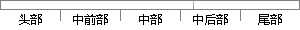

var result = JSON.
片段位置图

相似结果|
相似片段 1：下面分别说明二者的用法。1．服务器端来的 JSON从服务器端得到的应该是一个字符串，存入变量 serverJSON，使用方式如下：import json.*;var json:Object
相似片段 2：(theTime1%60);}}var result = ""+parseInt(theTime)+"秒";if(theTime1 > 0) {result = ""+parseInt(theTime1
相似片段 3：· <<result>lin
相似片段 4：("up_file_alarm");continue;}var index = file.val().lastIndexOf(".");if(index == -1){result= result && false;56
相似片段 5：.................. ??‘..........? ? 以卜为引用仿真结果的部分数据var create var=measure time- no real=(eval(eval($result data-
相似片段 6：ｉｆ （ ＄ｖａｒ ！ ＝＝＇＆＆ ！ ｉｓ＿ｎｕｌｌ （ ＄ｖａｒ ）＆＆ｉｓ＿ｎｕｍｅｒｉｃ（ ＄ｖａｒ ） ）｛＄ｒｅｓｕｌｔ ＝ｉｎｔｖａｌ（ ＄ｖａｒ ）；* 检查输入的字符是否合法，合法返回对应
相似片段 7：本程序中重点是使用 moveTo()、LineStyle()和 LineTo()函数完成设计，其主要程var Result：String；var LXX：Number；var LXY：Number
相似片段 8：act=get&&ID=”+SID；var callback=function(result，arg){if(!result.error&&result.value){Points[oParam
相似片段 9：=null) return result;}return null;function next_child_listnode(li) {var result=null;for (var i=0; i
相似片段 10： = calculationFormula + formula_split[i];var result = calculation(calculationFormula);result = (result / coefficient
|
※ 片段修改建议 ※
近似词参考：